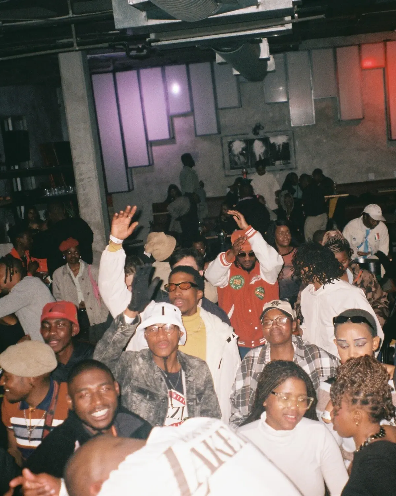
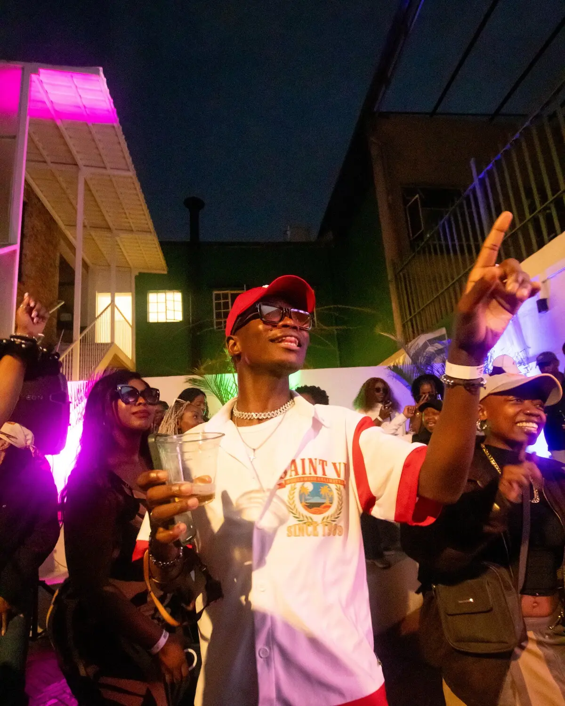
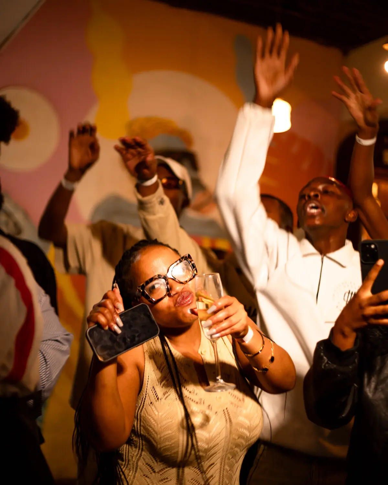
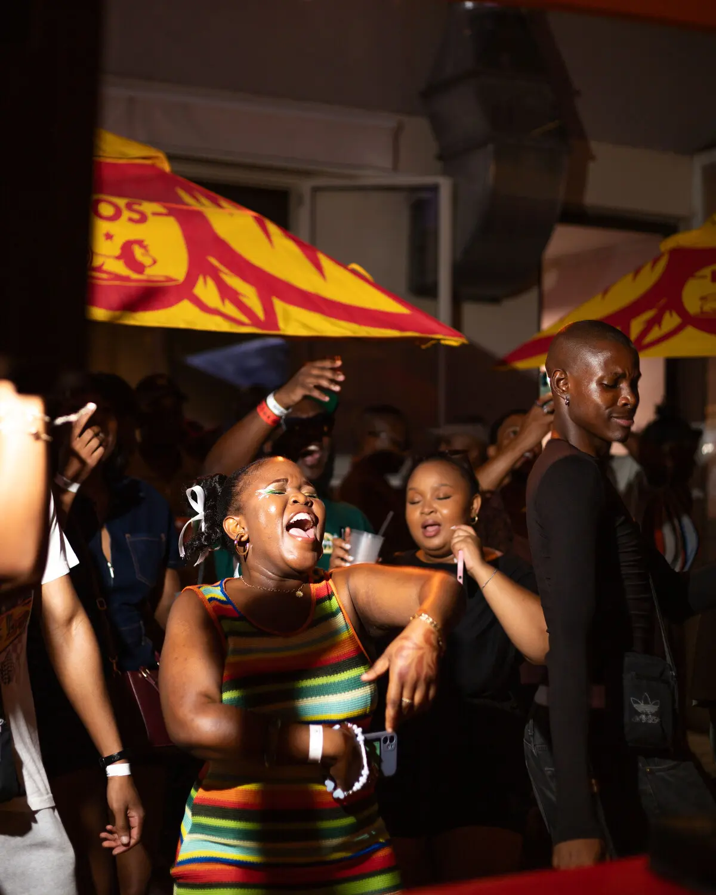

The House
Never Not Nice
Parent creative house & umbrella brand
The Event Series
Between Us (BÜ)
Flagship series · Proven & established
The Concept
Archive
Ultra-exclusive underground concept · Aug 1
Featured

Between Us

Archive

Joburg

The Archive
Get in Touch
hello@nevernotnice.co.za